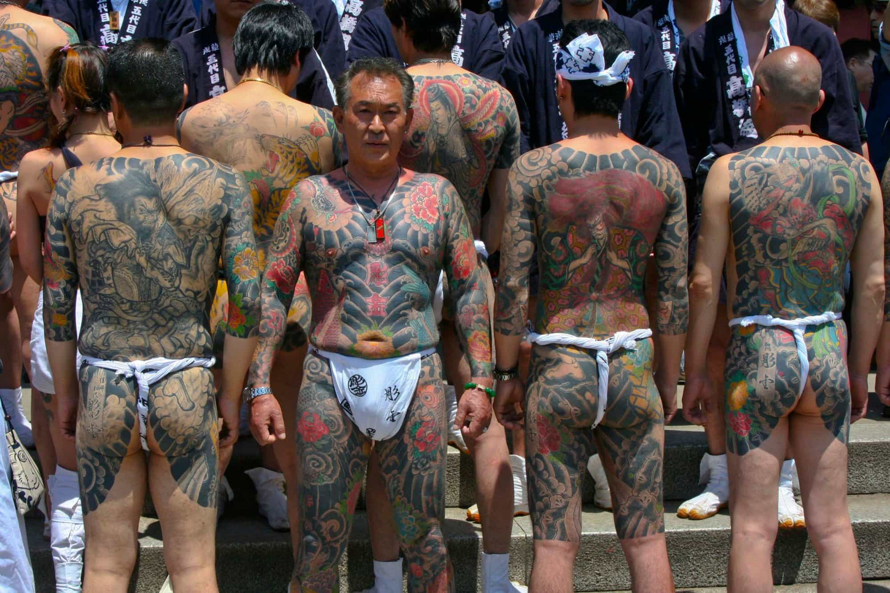
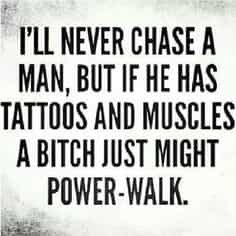
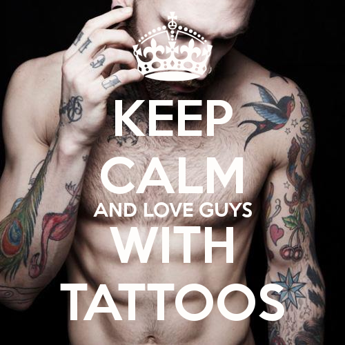

< < < Back
4 Reasons You Should Consider Getting A Tattoo – Return Of Kings
The subject of tattoos and whether or not they help attract women comes up in the ‘sphere every now and again. By and large, most men don’t seem to feel strongly one way or the other.
There are the occasional “you don’t put a bumper sticker on a Ferrari” people and the “tattoos are an ancient art and a form of individual expression” crowd, but from what I’ve seen and heard over the years the vast majority of people fall somewhere in the middle.
Personally, I’m heavily in favor of skin ink and there are many, many reasons. This article, however, will cover the four that pertain the most to our readers.
4. It doesn’t hinder you professionally (if done correctly)
No, this doesn’t mean that if you have facial or neck tattoos you can waltz into a Fortune 500 Company and expect to be taken seriously as a candidate as a CEO or an executive.
But if you’re talented enough and good enough at your job, your bosses won’t think twice when you show up to the company picnic rocking a t-shirt revealing a few tatts.
Sure, they may do a double take and it may raise a few eyebrows. But in 2015 tattoos are more commonplace in the professional sector than ever. Employers have figured out that talent is talent regardless of a couple reasonable tattoos or piercings.

Eliminated from any white collar job
Don’t get me wrong, I’m not saying you can show up looking like this guy and score a six figure income and a cushy office job (though there are industries that couldn’t give two shits about how you look so long as whatever you bring to their company pads their bottom line).
But so long as you keep it reasonable and your skin scars are easily covered up with regular work clothes your employment prospects won’t suffer…
…in the white collar world anyway. As far as blue collar jobs are concerned, I’m fairly certain that we’re all aware that anything goes.
3. If you have a good artist they look great

There are many people who argue that getting tatted up ruins your body, and there are many examples out there that make it hard to argue against them.
If your tattoo guy is a dude who does this as a hobby and inks you up in his mom’s basement with second hand equipment, you’re asking for trouble. You could have the coolest tattoo idea of all time but it doesn’t do you any good if your artist sucks.
A good, reputable tattoo artist makes all the difference in the world. Hell, even silly tattoos look great if your artist is rock solid. Sure, you’ll definitely pay a lot more but like everything else, you get what you pay for.
2. It’s a rite of passage (of sorts)

There are plenty of skin ink detractors out there but I’d bet the farm that a lot of them are just scared of the pain. I could be wrong but I doubt it.
Tattoos hurt…badly. And anyone who says they don’t is lying to you. Going under the needle for any amount of time isn’t easy. People like myself who’ve spent dozens of hours in that chair know the sense of accomplishment (and relief) we feel when any given session is finally over.
Okay, so maybe enduring an American tattoo parlor isn’t quite as intense, painful, or as time consuming as other cultural ritualistic tattoos like the Yakuza. But that doesn’t make it a walk in the park either.
Getting through any period of time when a needle is penetrating your skin hundreds of times a minute is difficult and there are no two ways about it. Pushing one’s self beyond their normal threshold of pain could be prove to be a turning point in one’s life.
1. Tattoos arouse women

Notice I said “arouse” and not “attract.” The things that make a man attractive aren’t the same things that moisten the panties of females.
Women want to marry the man who owns a condo in the city, a house in the suburbs and drives a Mercedes. But they want to fuck the tattooed dude who rides a motorcycle, financial instability be damned.
Argue all you want but the truth is the truth. Hot chicks get soaking wet over men with skin ink and that’s just all there is to it. This doesn’t mean they don’t get turned on by guys without tattoos, but trust me when I tell you your SMV will spike when you go under the needle.

In today’s sexual marketplace tattoos represent edginess, fearlessness, and raw masculinity. Sure, there are a lot of dudes walking around with tattoos who are none of those things, but their presence definitely opens doors with the opposite sex and gets their attention.
The key is to learn game so that when a girl strikes up conversation about your tatt, you can capitalize on the opportunity your ink created for you.
Conclusion
I’m sure there are perspectives all over the map on this one, and I’ll be very interested to see the comments section.
What I’d really like to find out is how life has or hasn’t changed as a result of getting some ink. Did you get better with women? More opportunities? Did people treat you or look at you differently?
Read Next: 5 Reasons Why Girls With Tattoos And Piercings Are Broken


{kind=link}